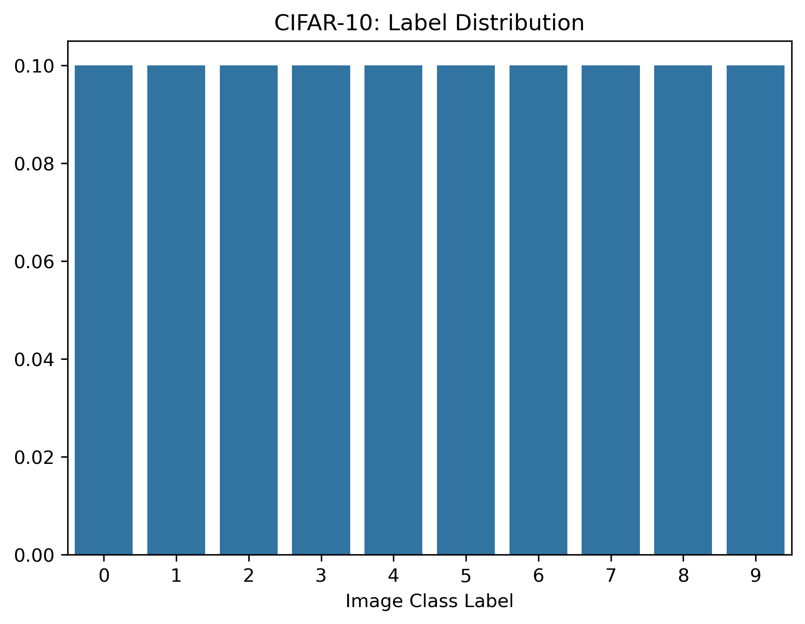
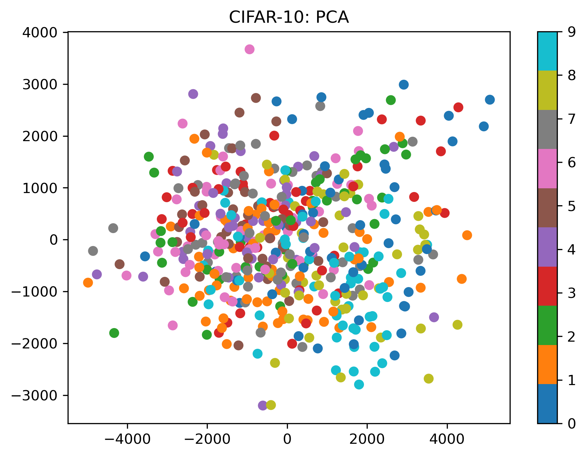
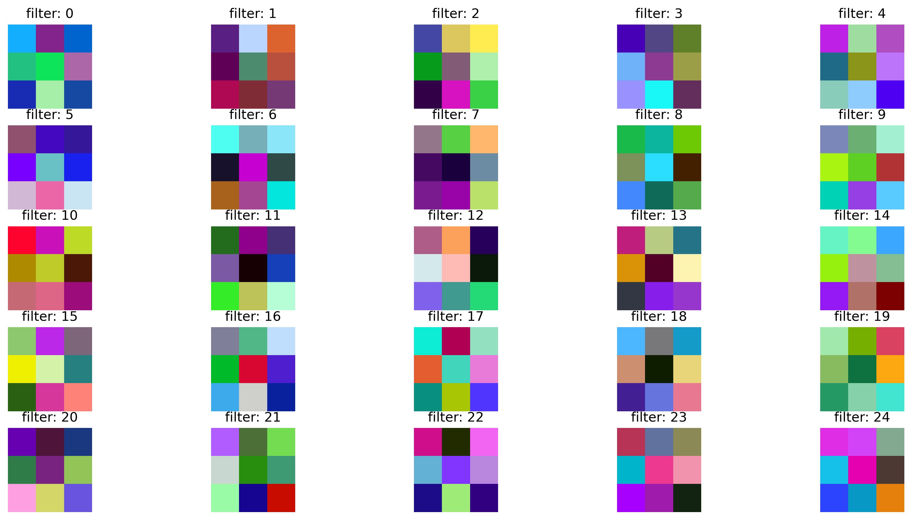

import pandas as pdimport seaborn as snsfract = pd.Series(train_dataset.targets).value_counts(normalize=True).sort_index()sns.barplot(x=fract.index, y=fract.values)plt.title("CIFAR-10: Label Distribution")plt.xlabel("Image Class Label")plt.show()

Code
from sklearn.decomposition import PCAn_sub =500# define a subset of digits for speed# flattening a tensor to get [samples x features]X_sub = train_dataset.data[:n_sub].reshape(n_sub, -1)y_sub = train_dataset.targets[:n_sub]print('Images X (flattened): ', X_sub.shape)X_pca = PCA(n_components =2).fit_transform(X_sub)print('PCA Representation: ',X_pca.shape)cm = plt.get_cmap('tab10')plt.scatter( X_pca[:,0], X_pca[:,1] , c=y_sub, cmap=cm)plt.title('CIFAR-10: PCA')plt.colorbar()plt.show()
Images X (flattened): (500, 3072)
PCA Representation: (500, 2)

Message
No apparent class structure (unlike MNIST)
simple feedforward network (MLP) will not be very accurate classifier
higher accuracy on flattened images will be difficult
change data representation and network architecture
Discussion: Challenges ?
Confused Cat
Why not add more layers ?
optimization increasingly hard
does not scale to larger images
MLP do not encode spatial structure \(\to\) input permutations possible
performance plateau
FC Problem in Numbers
1 input x 1 hidden layer:
[1000 x 1000 x 3 pixels] x [1000 neurons] \(\to\) 3 billion parameters
The idea
restrict capacity of each layer \(\to\)weight sharing
invariance assumption: should not matter where feature is
Convolutions
1D Conv
Convolutions combine two functions by sliding one (the kernel \(g(x)\)) over the other \[
(f \ast g)(x) = \sum_{k=-\infty}^{\infty} f[k] \cdot g[x-k]
\]
memory and compute in early layers, parameters in last layer
numbers can more than double when the gradients are calculated + caching
maintain also multiple images (batch normalization)
CNN: fitting, GPUs and batch size
The following cell will fit the model. This will take some time - especially without dedicated hardware (e.g. GPU) or further optimization (improved algorithm).
# Get the weights of the first conv layer (shape: [out_channels, in_channels, H, W])W = model.conv1.weight.data.cpu().numpy() # shape: (32, 3, 3, 3)print('W.shape: ',W.shape)fig = plt.figure(figsize=(16, 8))nr, nc = (5, 5) # number of rows and columnsfor i inrange(nr * nc):# Each filter: shape [3, 3, 3] (in_channels, H, W)# Transpose to (H, W, C) for imshow img = W[i].transpose(1, 2, 0)# Normalize to [0, 1] for visualization img = (img - img.min()) / (img.max() - img.min() +1e-5) ax = fig.add_subplot(nr, nc, i +1) ax.imshow(img) ax.set_title(f'filter: {i}') ax.axis('off')plt.show()
W.shape: (32, 3, 3, 3)

Notice: Maximal activation for all RGB channels=1 (black) and minimal activation for all RGB channels = 0 (white)
The last layer
The goal of the added convolutional layers is to obtain a better representation of the image data by representing spatial features (edges etc.). If this is successful then we would expect better separation properties in the penultimate layer (last before output layer).
Code
from sklearn.decomposition import PCAfrom sklearn.manifold import TSNE# Get representations from the penultimate (last hidden) layer in PyTorch# We'll use torch.no_grad() and a hook or simply modify the model to return features# Example assumes model: features = model.fc1 output after relu, before final fc2def get_last_layer_features(model, dataloader, device, n_samples=500): model.eval() features = [] labels = []with torch.no_grad(): count =0for xb, yb in dataloader: xb, yb = xb.to(device), yb.to(device) x = F.relu(model.conv1(xb)) x = model.pool1(x) x = model.flatten(x) x = F.relu(model.fc1(x))# Forward up to penultimate layer features.append(x.cpu()) labels.append(yb.cpu()) count += xb.size(0)if count >= n_samples:break features = torch.cat(features)[:n_samples] labels = torch.cat(labels)[:n_samples]return features.numpy(), labels.numpy()# Get features for train set (or a subset)X_lay, y = get_last_layer_features(model, train_loader, device, n_samples=500)# Also get original input (flattened)X_orig = []count =0for xb, yb in train_loader: X_orig.append(xb.cpu().reshape(xb.size(0), -1)) count += xb.size(0)if count >=500:breakX_orig = torch.cat(X_orig)[:500].numpy()print('X shapes: ', X_orig.shape, X_lay.shape)# PCA or t-SNEX_pca = PCA(n_components=2).fit_transform(X_orig)X_lay_pca = PCA(n_components=2).fit_transform(X_lay)print('PCA Shapes: ', X_pca.shape, X_lay_pca.shape)plt.figure(figsize=(8, 4))cm = plt.get_cmap('tab10')ax = plt.subplot(1, 2, 1)plt.scatter(X_pca[:, 0], X_pca[:, 1], c=y, cmap=cm)plt.title('PCA: X orig.')ax = plt.subplot(1, 2, 2)plt.scatter(X_lay_pca[:, 0], X_lay_pca[:, 1], c=y, cmap=cm)plt.title('PCA - X transformed')plt.colorbar()plt.show()
CNN: match network to spatial structure (pass 2D images)
goal: ‘better’ representation of input data
Lower layers: Primitive “concepts”
Deeper layers: Higher order “concepts”
Example from VGGNet. Image from A. Karpathy
Source Code
---title: Convolutional Neural Networksjupyter: pytorchdraft: falseeval: truedescription: bringing spatial structure to neural networks---```{python}#| label: get_packages#| code-fold: true#| code-summary: Importsimport psutil, osimport numpy as npimport torchimport torch.nn as nnimport torch.nn.functional as Ffrom torchvision import datasets, transformsfrom torch.utils.data import DataLoader, random_split, Subsetfrom torchinfo import summaryfrom sklearn.metrics import confusion_matrix, ConfusionMatrixDisplay, classification_reportfrom sklearn.model_selection import train_test_splitimport matplotlib.pyplot as pltfrom PIL import Imagefrom lecture_utils.helper import plot_cm, detect_devicedef plot_fit_history(hist, name='loss', test_score=None):if name notin hist:print(f"{name} not found in history")return plt.plot(hist[name], label='train') val_name ='val_'+ nameif val_name in hist: plt.plot(hist[val_name], label='valid')if test_score isnotNone: plt.axhline(test_score, color='green', linestyle='-.', label='test') plt.xlabel('Epoch') plt.ylabel(name) plt.legend() plt.show()def dataset2images(dataset, classes, SEED=42, n=16):"""Show n random images from a dataset in a 4x4 grid.""" np.random.seed(SEED) indices = np.random.choice(len(dataset), n, replace=False) plt.figure(figsize=(8, 8))for i, idx inenumerate(indices): img, label = dataset[idx]if torch.is_tensor(img):# PyTorch tensor (C,H,W) -> numpy (H,W,C) img_np = img.permute(1, 2, 0).cpu().numpy()elifisinstance(img, Image.Image):# PIL Image img_np = np.array(img)elifisinstance(img, np.ndarray):# numpy array already OK img_np = imgelse:raiseTypeError(f"Unsupported image type: {type(img)}. ""Expected torch.Tensor, PIL.Image, or numpy.ndarray." )# Plot ax = plt.subplot(4, 4, i +1) ax.imshow(img_np) ax.set_title(f"{label}: {classes[label]}") ax.axis("off") plt.tight_layout() plt.show()process = psutil.Process(os.getpid())def mem_MB():return process.memory_info().rss / (1024**2)device = detect_device()BATCH_SIZE =64print('torch-version: ', torch.__version__)print('device: ', device)```## Review- neural networks: layers of neurons connected by weights- each neuron: linear function (weights/bias) + non-linear activation function- loss optimization: iterations, (stochastic) gradient descent, momentum, ADAM- mathematical solution: **backprogation** of gradients = chain rule on computational graph- engineering challenges: - vanishing gradients $\to$ activation functions, weight initialization - overfitting $\to$ test set, regularization - coding complexity $\to$ frameworks- interpretation challenges: - overconfidence and calibration - overparameterization, interpretation - beyond accuracy and other goals<!--- MNIST simplicity: training (and test) data were highly structured: fixed size, grey scale, item centered, only single item -->## Another classical dataset: CIFAR-10This is a set of 50k coloured images [32, 32, 3] in 10 categories.But unlike MNIST they are not as standardized.Reference: [Krizhevsky, Nair, Hinton](https://www.cs.toronto.edu/~kriz/cifar.html){target="_blank" rel="noopener"}```{python}#| label: pytorch_CIFAR10#| code-fold: truefrom torchvision import datasets, transformstransform = transforms.Compose([# can add many (image) transformations here# .... resize, rotate, flip, ....# minimal transformation: PIL --> tensor transforms.ToTensor(),])# tochvision dataset: list of tuples (tensor, int)train_dataset = datasets.CIFAR10(root='./data', train=True, download=True, transform=transform)test_dataset = datasets.CIFAR10(root='./data', train=False, download=True, transform=transform)train_MB = train_dataset.data.nbytes /1024**2test_MB = test_dataset.data.nbytes /1024**2cifar_classes = train_dataset.classesprint(f"classes: {cifar_classes}")print(f"train: shape={train_dataset.data.shape} size={train_MB:.2f}")print(f"test: shape={test_dataset.data.shape} size={test_MB:.2f}")# plot a selectiondataset2images(train_dataset, cifar_classes)```::: {.callout-note}### Note- CIFAR-10 is downloaded to disk (`./data/`)- RAM footprint can be much larger ($\to$ DataLoader)- transformations: part of data definition; standardized and modularized:::## Data AccessThere are several ways to access pytorch datasets```{python}#| label: dataset_access# access raw data: untransformed numpy .data and .targets are CIFAR-specificnd = train_dataset.data print(f"train_dataset.data: {nd.shape} -> range: {nd.min().item()} - {nd.max().item()}")print(f"train_dataset.targets: {np.unique(train_dataset.targets)}")# access transformed data: using generic methods (__getitem__ and __len__)img, label = train_dataset[0] # returns tuple (torch.tensor, integer)print(f"img: {img.shape} range: {img.min().item()} - {img.max().item()}")print(f"label: {label} -> {cifar_classes[label]}")print(f"len(train_dataset): {len(train_dataset)}")```## Explore```{python}#| label: label_distribution#| code-fold: trueimport pandas as pdimport seaborn as snsfract = pd.Series(train_dataset.targets).value_counts(normalize=True).sort_index()sns.barplot(x=fract.index, y=fract.values)plt.title("CIFAR-10: Label Distribution")plt.xlabel("Image Class Label")plt.show()``````{python}#| label: PCA#| code-fold: truefrom sklearn.decomposition import PCAn_sub =500# define a subset of digits for speed# flattening a tensor to get [samples x features]X_sub = train_dataset.data[:n_sub].reshape(n_sub, -1)y_sub = train_dataset.targets[:n_sub]print('Images X (flattened): ', X_sub.shape)X_pca = PCA(n_components =2).fit_transform(X_sub)print('PCA Representation: ',X_pca.shape)cm = plt.get_cmap('tab10')plt.scatter( X_pca[:,0], X_pca[:,1] , c=y_sub, cmap=cm)plt.title('CIFAR-10: PCA')plt.colorbar()plt.show()```::: callout-note### Message- No apparent class structure (unlike MNIST)- simple feedforward network (MLP) will not be very accurate classifier- higher accuracy on flattened images will be difficult - change data representation and network architecture:::## Discussion: Challenges ?<!--- spatially distributed features- view point- illumination- deformation- occlusion - intraclass variation--->## Why not add more layers ?- optimization increasingly hard- does not scale to larger images- MLP do not encode spatial structure $\to$ input permutations possible- performance plateau::: {.callout-caution}### FC Problem in Numbers1 input x 1 hidden layer: [1000 x 1000 x 3 pixels] x [1000 neurons] $\to$ 3 billion parameters:::## The idea- restrict capacity of each layer $\to$ **weight sharing**- *invariance* assumption: should not matter where feature is## Convolutions### 1D ConvConvolutions combine two functions by **sliding** one (the kernel $g(x)$) over the other$$(f \ast g)(x) = \sum_{k=-\infty}^{\infty} f[k] \cdot g[x-k]$$This can be used conveniently for- smoothing/averaging- change detection (derivatives) - pattern detection- sharpening```{python}#| label: 1D_conv#| fig-cap: Different kernels in 1D#| code-fold: trueimport numpy as npimport matplotlib.pyplot as pltfrom scipy.signal import convolve# Create a signal with edgesx = np.linspace(-10, 10, 400)f = np.sin(x) +0.1*np.random.randn(len(x)) # noisy sinus# Kernelsxk = np.linspace(-3, 3, 51)sigma =1g1 = np.exp(-(xk**2)/(2*sigma**2));g1 = g1 / g1.sum() # Gaussian for smoothing/averagingg2 = np.array([-1, 1]) # 1st derivativeg3 = np.array([1, -2, 1]) # 2nd derivative (Laplacian)g4 = np.array([-1, 2, -1]) # High-pass filter (sharpening)# Convolvefs = convolve(f, g1, mode='same') # smoothed signalf1 = convolve(fs, g2, mode='same') # 1st derivativef1s = convolve(f1, g1, mode='same') # smoothed 1st derivativf2 = convolve(f1s, g3, mode='same') # 2nd derivative# remove boundary effectspad =81x = x[pad:-pad]f = f[pad:-pad]fs = fs[pad:-pad]f1 = f1[pad:-pad]f2 = f2[pad:-pad]# Plot: # kernels are scaled arbitrarly for visibilityfsize =14plt.figure(figsize=(6, 6))plt.subplot(4,1,1)plt.plot(x, f)plt.title("Original Data", fontsize=fsize)plt.subplot(4,1,2)plt.plot(x, fs)plt.bar(xk-1, g1*20, color="orange", width=0.05)plt.title("Smoothing/Averaging: fs = f * G \n Gaussian Kernel $G \\propto \\exp{(-x^2)}$", fontsize=fsize)plt.subplot(4,1,3)plt.plot(x, f1);plt.bar(x[[99,100]], g2/20, color="orange",width=0.05)plt.title("Change Detection: f1 = fs * D \n 1st derivative D = [-1, +1]", fontsize=fsize)plt.subplot(4,1,4)plt.plot(x, f2);plt.bar(x[[99,100,101]], g3/10000, color="orange",width=0.05)plt.title("Curvature Detection: f2 = (f1 * G) * L \n 2nd derivative L = [1, -2, 1]", fontsize=fsize)plt.tight_layout()plt.show()```::: {.callout-note}- appropriate convolutions can extract features- many different kernels possible- find different (more suitable) data representations- kernel rules are shift-invariant and independent of data size- controlled by few parameters:::### 2D Conv## Convolutional Neural Networks (CNN)## New layers: Filters and Pools- **input layer:** image [3 channels (RGB), height, width]- **convolutional layer** (Conv): K **filters** e.g [K,3,3,3] - detect pattern (e.g. horizontal, vertical, diagonal lines) - have the same depth as input - several filter per layer: different filters applied to same spatial location in image- **pooling filter** (Pool) - spatial downsampling, depth stays the same (e.g. max or average)- **fully conncted layer** (Dense) - connect all previous nodesTypical structures: Input - Conv/Relu - Conv/Relu - Pool - Conv/Relu - ... - Dense## Convolutions### Number of outputs from Convolutional Layer- $F$ filter size- $S$ stride- $P$ padding$$N_{out} = \frac{N_{in} - F + 2P}{S} + 1$$**Notice**- $(N_{in} - F + 2P)/S$ has to be integer for this to work properly.### Habits and Recommendations- use input size $L \times L = 2^n$ (e.g. 512)- use stride $S=1$- use padding $P= (F-1)/2$ to retain input size --> multiple CONV layers- pooling: $F=2 S=2$ (size reduction: $L \times L --> L/2 \times L/2$ !!! - aggressive reduction## Data PreparationThe data preparation invokes the usual steps: - splitting data sets into train, validation, test- optionally: downsample for speed- definition of batches### Split and Downsample```{python}#| label: split_and_downsample#| code-fold: truefrom sklearn.model_selection import train_test_splitfrom torch.utils.data import SubsetSEED =42FRACT =0.1TRAIN_VAL=0.8# get current sizestrain_indices = np.arange(len(train_dataset)) train_labels = np.array(train_dataset.targets)test_indices = np.arange(len(test_dataset)) test_labels = np.array(test_dataset.targets)# subsample FRACT train_pool_idx, _ = train_test_split( train_indices, train_size=FRACT, stratify=train_labels, random_state=SEED)test_idx, _ = train_test_split( test_indices, train_size=FRACT, stratify=test_labels, random_state=SEED)# split train -> train + valy_pool = train_labels[train_pool_idx]train_idx, val_idx = train_test_split( train_pool_idx, train_size=TRAIN_VAL, stratify=y_pool, random_state=SEED)train_ds = Subset(train_dataset, train_idx)val_ds = Subset(train_dataset, val_idx)test_ds = Subset(test_dataset, test_idx)print(f"train: {train_idx.shape}, val: {val_idx.shape}, test: {test_idx.shape}")```### Data Loaders for BatchesDataLoaders provide efficient access to batches during training and evaluation```{python}#| label: data_loaders#| code-fold: true# shuffle = True for randomized optimization and gradients calculationtrain_loader = DataLoader(train_ds, batch_size=BATCH_SIZE, shuffle=True)# shuffle = False for fixed and consistent evaluation and metricstest_loader = DataLoader(test_ds, batch_size=BATCH_SIZE, shuffle=False)val_loader = DataLoader(val_ds, batch_size=BATCH_SIZE, shuffle=False)```## CNN: PyTorch implementation```{python}#| label: CNN_Modelimport torchimport torch.nn as nnimport torch.nn.functional as Ffrom torchinfo import summary# Number of classesnc =len(cifar_classes)X_train, y_train =next(iter(train_loader))print('input_shape: ', X_train.shape)print('number of classes:', nc)class CNN_Model(nn.Module):def__init__(self, num_classes=nc):super().__init__()self.conv1 = nn.Conv2d(3, 32, kernel_size=3, padding=1)self.pool1 = nn.MaxPool2d(2, 2)self.flatten = nn.Flatten()self.fc1 = nn.Linear(32*16*16, 128)self.fc2 = nn.Linear(128, num_classes)def forward(self, x): x = F.relu(self.conv1(x)) x =self.pool1(x) x =self.flatten(x) x = F.relu(self.fc1(x)) x =self.fc2(x)return xmodel = CNN_Model().to(device)print(summary(model, input_data=X_train, device=device))loss_function = nn.CrossEntropyLoss()optimizer = torch.optim.Adam(model.parameters())```**Notice**- memory and compute in early layers, parameters in last layer- numbers can more than double when the gradients are calculated + caching - maintain also multiple images (batch normalization)## CNN: fitting, GPUs and batch sizeThe following cell will fit the model. This will take some time - especially without dedicated hardware (e.g. GPU) or further optimization (improved algorithm).```{python}#| label: train_modelnum_epochs =5history = {'loss': [], 'val_loss': []}for epoch inrange(num_epochs): model.train() total_loss =0for xb, yb in train_loader: xb, yb = xb.to(device), yb.to(device) optimizer.zero_grad() logits = model(xb) loss = loss_function(logits, yb) loss.backward() optimizer.step() total_loss += loss.item() train_loss = total_loss /len(train_loader.dataset) history['loss'].append(train_loss)# Validation model.eval() val_loss =0with torch.no_grad():for xb, yb in val_loader: xb, yb = xb.to(device), yb.to(device) logits = model(xb) loss = loss_function(logits, yb) val_loss += loss.item() val_loss = val_loss /len(val_loader.dataset) history['val_loss'].append(val_loss)print(f"Epoch {epoch+1}: train_loss={train_loss:.4f}, val_loss={val_loss:.4f}")```### Save ModelSince training is expensive we usually want to safethe model and history. In real application this would also be done during training.```{python}#| label: save_modeloutdir ="output"os.makedirs(outdir, exist_ok=True)torch.save(model.state_dict(), f'{outdir}/cifar_model.pt')torch.save(history, f"{outdir}/cifar_history.pt")```::: {.callout}### CIFAR-Demo[CNN with Javascript. Animation from Karpathy.](https://cs.stanford.edu/people/karpathy/convnetjs/demo/cifar10.html){target="_blank" rel="noopener"}:::## Evaluations on Test```{python}#| label: test_evaluation#| code-fold: true# Evaluate on testmodel.eval()total_loss =0all_logits = []all_true = []with torch.no_grad():for xb, yb in test_loader: xb, yb = xb.to(device), yb.to(device) logits = model(xb) loss = loss_function(logits, yb)# collect total_loss, predicted logits and true labels yb total_loss += loss.item() all_logits.append(logits.cpu()) all_true.append(yb.cpu())test_loss = total_loss /len(test_loader.dataset) # mean test lossall_logits = torch.cat(all_logits)all_true = torch.cat(all_true)plot_fit_history(history, 'loss', test_loss)all_preds = all_logits.argmax(dim=1).detach().cpu()cm = confusion_matrix(all_true.numpy(), all_preds.numpy())disp = ConfusionMatrixDisplay(confusion_matrix=cm)disp.plot(cmap='Blues')plt.show()```**Discussion:** What could be further improvements?## A closer look at layersMotivation: Understand prediction in terms of layered "concepts"```{python}#| label: model_summaryprint(summary(model, input_data=X_train, device=device))```### Filters```{python}#| label: filters# Get the weights of the first conv layer (shape: [out_channels, in_channels, H, W])W = model.conv1.weight.data.cpu().numpy() # shape: (32, 3, 3, 3)print('W.shape: ',W.shape)fig = plt.figure(figsize=(16, 8))nr, nc = (5, 5) # number of rows and columnsfor i inrange(nr * nc):# Each filter: shape [3, 3, 3] (in_channels, H, W)# Transpose to (H, W, C) for imshow img = W[i].transpose(1, 2, 0)# Normalize to [0, 1] for visualization img = (img - img.min()) / (img.max() - img.min() +1e-5) ax = fig.add_subplot(nr, nc, i +1) ax.imshow(img) ax.set_title(f'filter: {i}') ax.axis('off')plt.show()```**Notice:** Maximal activation for all RGB channels=1 (black) and minimal activation for all RGB channels = 0 (white)## The last layerThe goal of the added convolutional layers is to obtain a better representation of the image data by representing spatial features (edges etc.). If this is successful then we would expect better separation properties in the penultimate layer (last before output layer).```{python}#| label: last_layer_PCA#| code-fold: truefrom sklearn.decomposition import PCAfrom sklearn.manifold import TSNE# Get representations from the penultimate (last hidden) layer in PyTorch# We'll use torch.no_grad() and a hook or simply modify the model to return features# Example assumes model: features = model.fc1 output after relu, before final fc2def get_last_layer_features(model, dataloader, device, n_samples=500): model.eval() features = [] labels = []with torch.no_grad(): count =0for xb, yb in dataloader: xb, yb = xb.to(device), yb.to(device) x = F.relu(model.conv1(xb)) x = model.pool1(x) x = model.flatten(x) x = F.relu(model.fc1(x))# Forward up to penultimate layer features.append(x.cpu()) labels.append(yb.cpu()) count += xb.size(0)if count >= n_samples:break features = torch.cat(features)[:n_samples] labels = torch.cat(labels)[:n_samples]return features.numpy(), labels.numpy()# Get features for train set (or a subset)X_lay, y = get_last_layer_features(model, train_loader, device, n_samples=500)# Also get original input (flattened)X_orig = []count =0for xb, yb in train_loader: X_orig.append(xb.cpu().reshape(xb.size(0), -1)) count += xb.size(0)if count >=500:breakX_orig = torch.cat(X_orig)[:500].numpy()print('X shapes: ', X_orig.shape, X_lay.shape)# PCA or t-SNEX_pca = PCA(n_components=2).fit_transform(X_orig)X_lay_pca = PCA(n_components=2).fit_transform(X_lay)print('PCA Shapes: ', X_pca.shape, X_lay_pca.shape)plt.figure(figsize=(8, 4))cm = plt.get_cmap('tab10')ax = plt.subplot(1, 2, 1)plt.scatter(X_pca[:, 0], X_pca[:, 1], c=y, cmap=cm)plt.title('PCA: X orig.')ax = plt.subplot(1, 2, 2)plt.scatter(X_lay_pca[:, 0], X_lay_pca[:, 1], c=y, cmap=cm)plt.title('PCA - X transformed')plt.colorbar()plt.show()```::: {.callout-important}## Summary- MLP: pass 1D vectors from layer to layer- CNN: match network to spatial structure (pass 2D images)- goal: 'better' representation of input data- Lower layers: Primitive "concepts" - Deeper layers: Higher order "concepts" :::